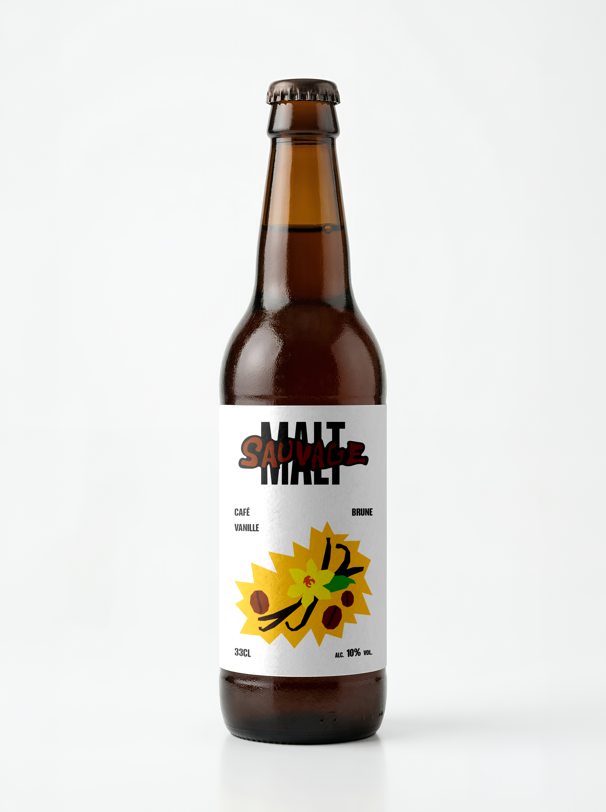
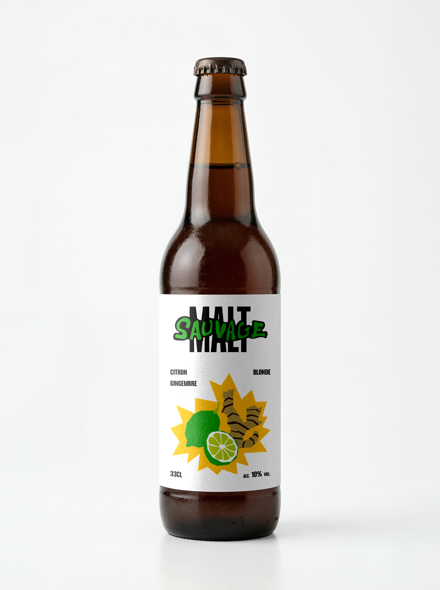
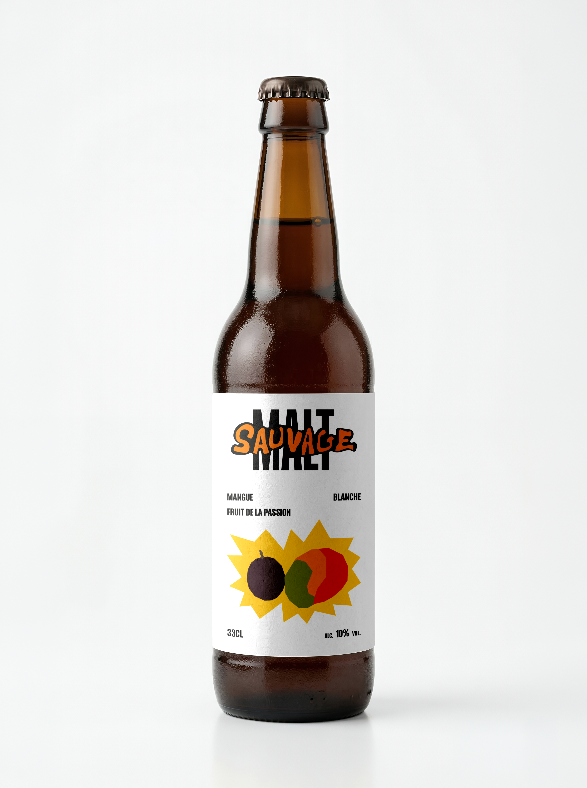

Malt Sauvage
Projet scolaire
InDesign, Illustrator, Photoshop
2026
Réalisé en 3 heures dans un cadre contraint, ce projet consiste à créer l’identité visuelle et trois étiquettes pour la marque fictive de bières artisanales Malt Sauvage, mêlant sérieux brassicole et approche libre.
La direction artistique joue sur le contraste entre la rigueur de la typographie Reel et le lettrage organique du mot « Sauvage ». Des illustrations minimalistes aux aplats vifs prolongent cet esprit sur une base noir, blanc et jaune, relevée par la couleur de chaque ingrédient pour une lecture directe sur bouteille.